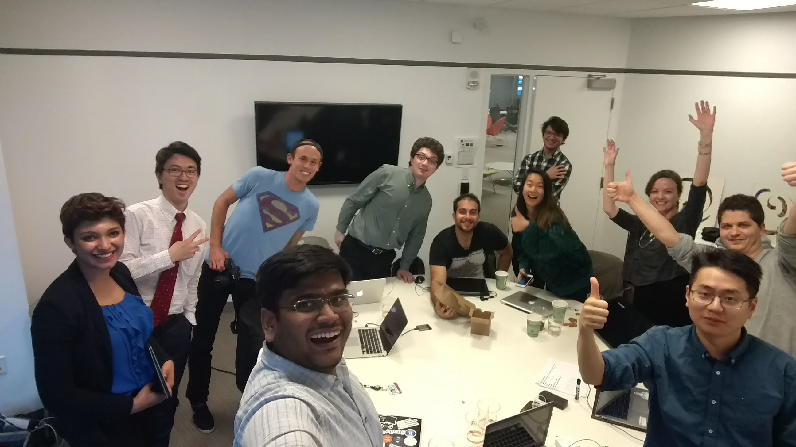

Data Analyst
Incubated in Summer 2017 at the Harvard Innovation Labs in Cambridge Massachusetts. Affect Mental Health aimed to be a launchpad for mental health startups to provide a safe space for like minded individuals to address the hair on fire problem of mental health. The very first project undertaken by Affect, The 1000 Journeys targeted at raising awareness about the existence of Mental Health problems and fighting the stigma around it.
My Projects were distributed across different functions, supporting the marketing teams with quick and dirty analytics with Twitter and working with elaborate market research using BigQuery to working with the 1000 Journeys Interview teams to identify key data metrics for text analytics